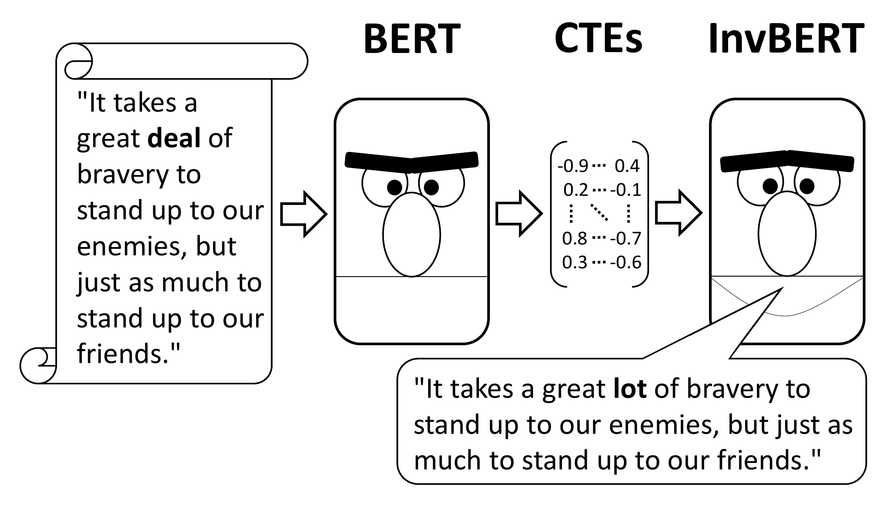
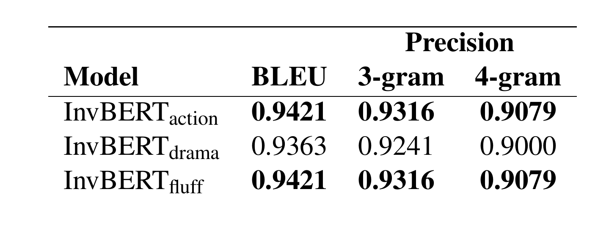
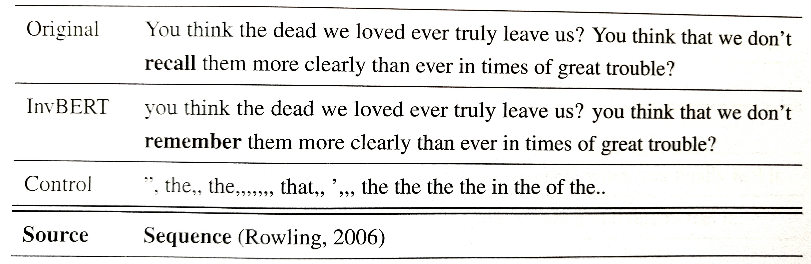
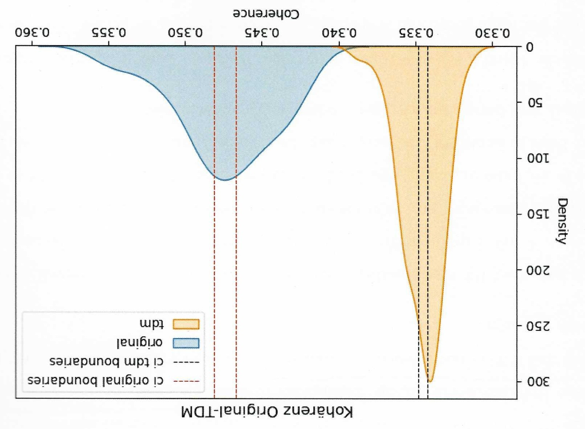
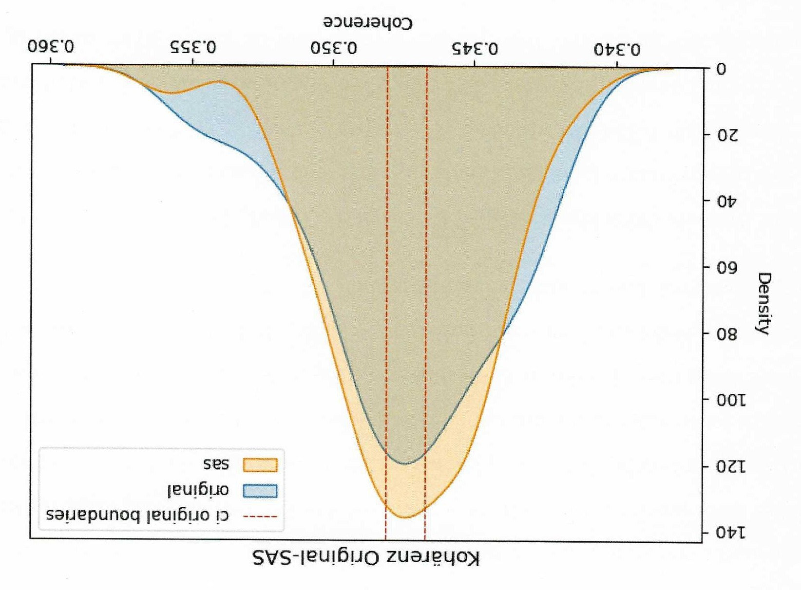
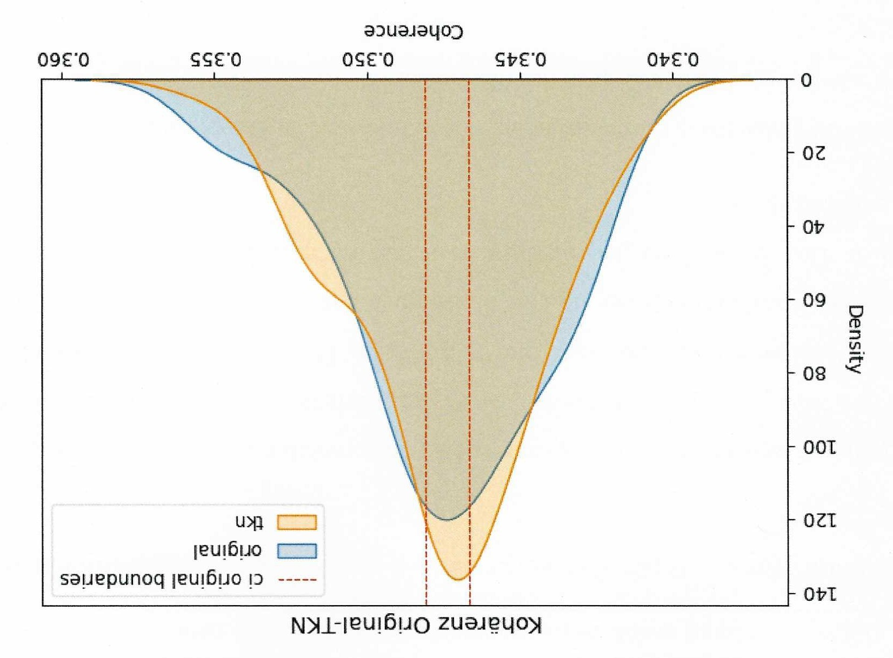

# Text und Data Mining und Urheberrecht: # Aktuelles zum Thema 'abgeleitete Textformate' <hr/> <br/><br/><br/> Christof Schöch (Universität Trier) SPP-CLS General Meeting, 22. September 2021 Präsentation: https://dh-trier.github.io/atf <br/><br/> <hr/> <img data-src="img/basics/uni-trier.png" height="40"> </img></img> -- ### Überblick 1. Rekonstruktion von Text aus CET (InvBERT) 1. Evaluation von Textformaten bei Topic Modeling 1. Abgeleitete Textformate im NFDI-Konsortium Text+ -- ## Rekonstruktion von Text aus CET (InvBERT) --- ### Kontext * Masterarbeit von Johannes Hoehmann im Fach Computerlinguistik (Trier; Betreuung: Achim Rettinger) * Hintergrund: Rekonstruierbarkeit von abgeleiteten Textformaten als Kriterium bei der urheberrechtlichen Einordnung * Fokus: Das Format "contextualized embeddings" (BERT) --- ### Grundidee </img> * Es liegt ein auf umfangreichen Daten trainiertes BERT-Modell vor <!-- .element: class="fragment" data-fragment-index="1" --> * Volltext wird als Menge kontextabhängiger Embeddings kodiert <!-- .element: class="fragment" data-fragment-index="2" --> * Frage: Kann der Volltext aus den Embeddings rekonstruiert werden? <!-- .element: class="fragment" data-fragment-index="3" --> * Strategie: neuronales Netz lernt, die Transformation von Wörtern in Vektoren umzukehren <!-- .element: class="fragment" data-fragment-index="4" --> --- ### Die "attack scenarios" * Erfolg ist abhängig vom jeweiligen "attack scenario" (= verfügbare Information)<br/><br/> * **SC1: Embedding-only**: nur die Embeddings sind verfügbar * **SC2: Black-Box**: API-Zugriff auf das Modell * **SC3: White-Box**: Tokenizer, Vocabulary, Architektur, Parameter, Encoding Layer (nicht aber Gewichte) des Modells bekannt --- ### Ergebnisse </img> <!-- .element: class="fragment" data-fragment-index="3" --> * SC1: Rekonstruktion nicht denkbar <!-- .element: class="fragment" data-fragment-index="1" --> * SC2: Substantielle Hürden <!-- .element: class="fragment" data-fragment-index="2" --> * SC3 (White Box): Rekonstruktion möglich <!-- .element: class="fragment" data-fragment-index="3" --> * Werte oben zeigen die Tests mit Harry-Potter-Zitaten * Rekonstruktion klappt hier sehr gut (BLEU: >0.9) --- ### Beispiel </img> -- ## Evaluation von Textformaten bei Topic Modeling --- ### Kontext * Masterarbeit im Fach Digital Humanities (Trier) * Fragestellung: wie gut eignen sich abgeleitete Textformate für Topic Modeling? * Testkorpus: 126 englische Romane --- ### Evaluierte Formate * Einfache Term-Dokument-Matrix (TDM) * Segmentweise Aufhebung der Sequenzinformation (SAS) * Selektive Modifikation der Tokens (TKN) * (N-Gramme) --- ### Ergebnisse in aller Kürze </img></img></img> Original vs. TDM – Original vs. SAS – Original cs. TKN <br/> * Kohärenz der Topics wurde mit Palmetto erhoben * Hier visualisiert: jeweils 20 Modelle pro Textformat -- ## Abgeleitete Textformate in Text+ --- ### Beitrag zu "Collections" * TCDH trägt u.a. zum Bereich "Collections" bei * Umfang: Etwa 0.5 FTE über 5 Jahre * Kernaufgabe: Weiterentwicklung der abgeleiteten Textformate --- ### Aufgaben * Im Einzelnen <!-- .element: class="fragment" data-fragment-index="1" --> * Spezifikation mehrere Abgeleiteter Textformate (ATF) * Spezifikation der Transformations-Routine * Evaluation der ATF: Performance verschiedener Methoden mit verschiedenen ATF * Rechtliche Einschätzung (Werkgenuß, Wiedererkennbarkeit, Rekonstruierbarkeit) * Beispielhaftes Angebot mehrerer Sammlungen als ATF * Perspektive: Zertifizierung der Formate und Prozesse * Abstimmung mit der Community (SPP!) <!-- .element: class="fragment" data-fragment-index="2" --> * Auswahl der Formate * Auswahl der Textsammlungen * Präferenzen zu den Modalitäten -- <img data-src="img/danke.png" height="550"></img>